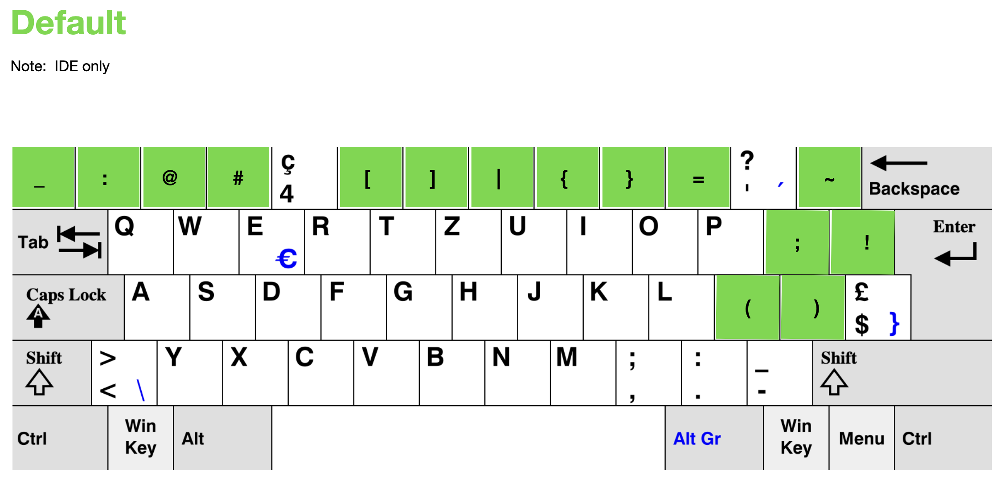

This is a Karabiner configuration for macOS that remaps the Swiss keyboard layout to make it more ergonomic and efficient for both general use and development tasks (IDE).
Basic Swiss keyboard layout adjustments. For example [ctrl+c = copy] and [ctrl+v = paste].
These keyboard mappings are automatically disabled when using remote access applications to ensure proper functionality on remote systems. Excluded applications include:
This prevents keyboard shortcuts from being intercepted locally when you need them to work on the remote/virtual system.
For developers eager to keep their hands and fingers agile into their later years! Impacts IDEs exclusively. Accessing [], {}, and so on more easily.
These developer-specific keyboard mappings are only active in the following code editors and IDEs:
This ensures the developer shortcuts work seamlessly across the most popular coding environments.
